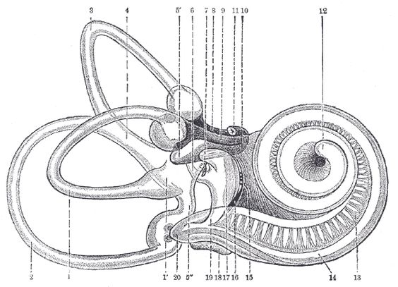
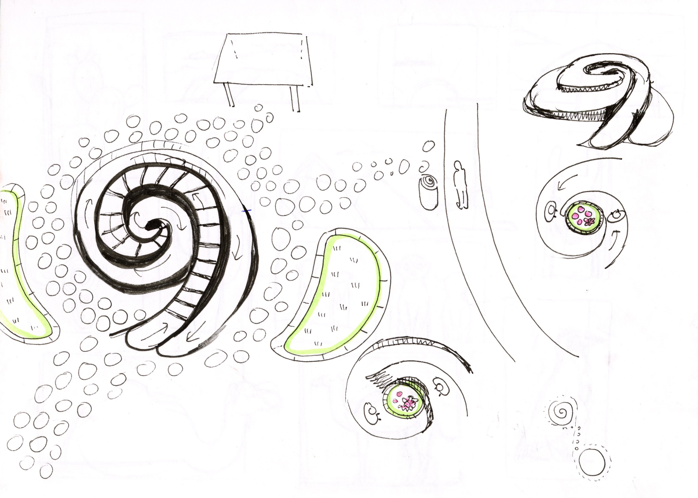
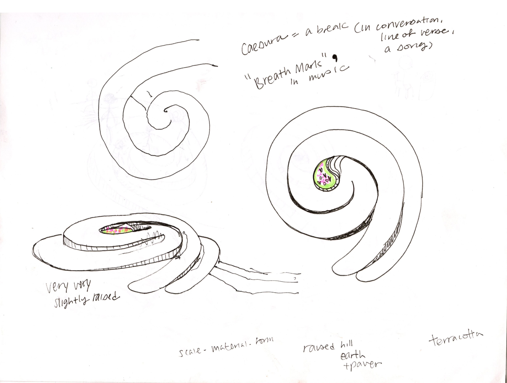
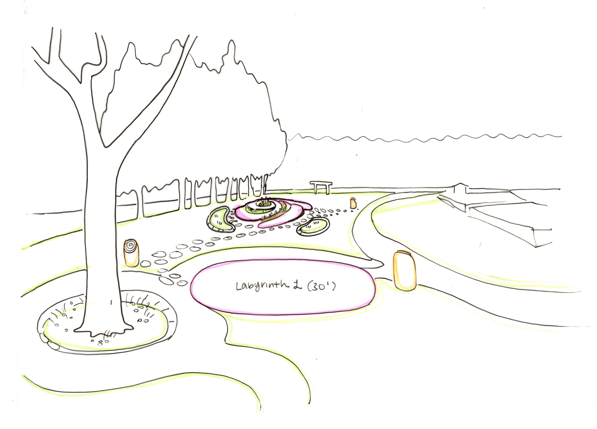
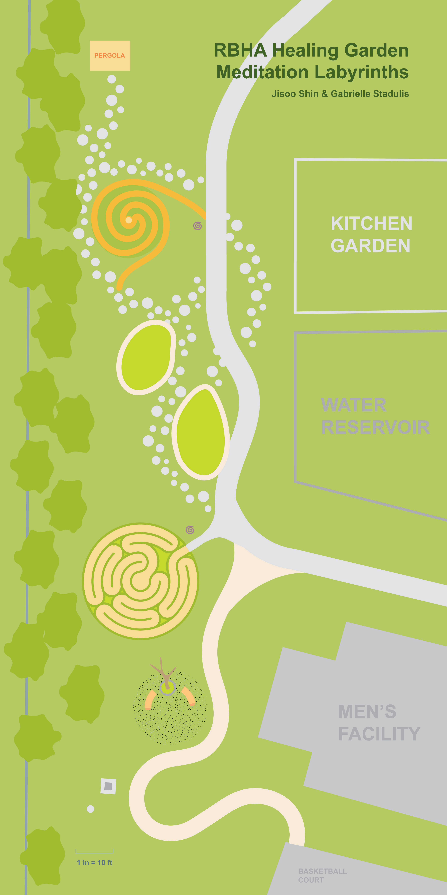
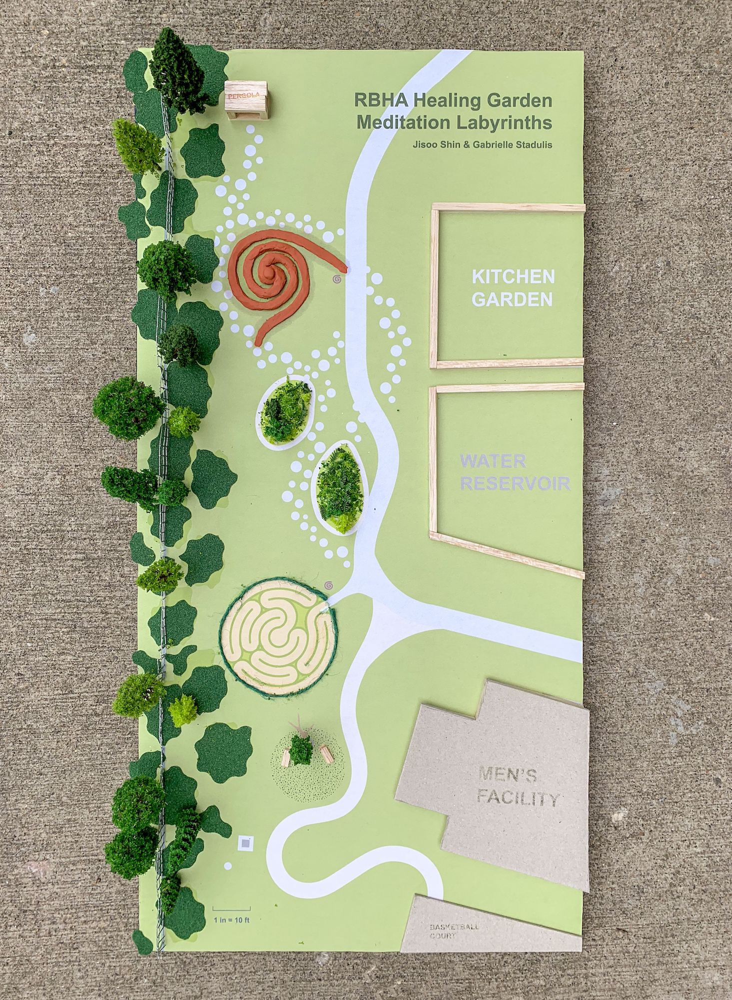
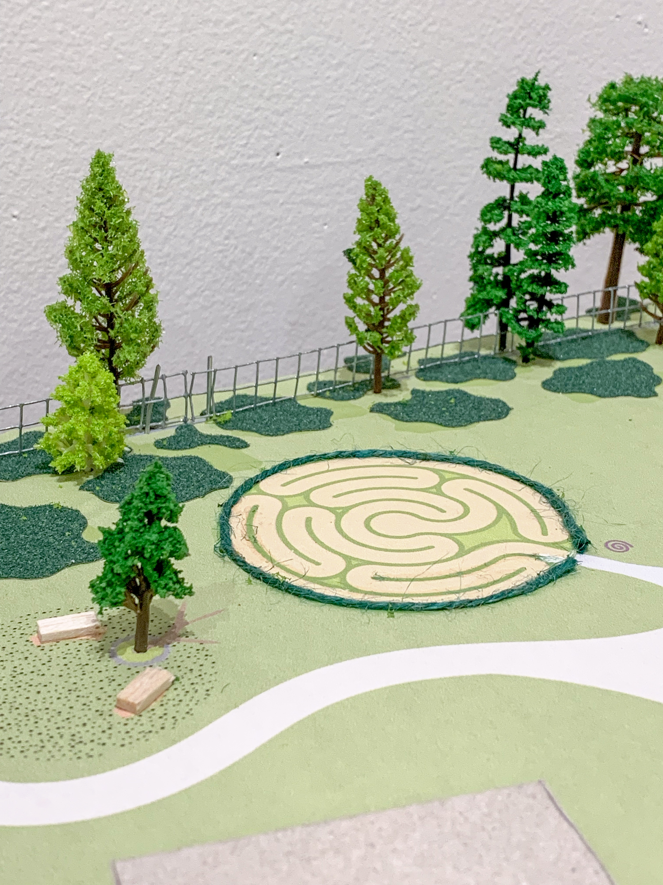
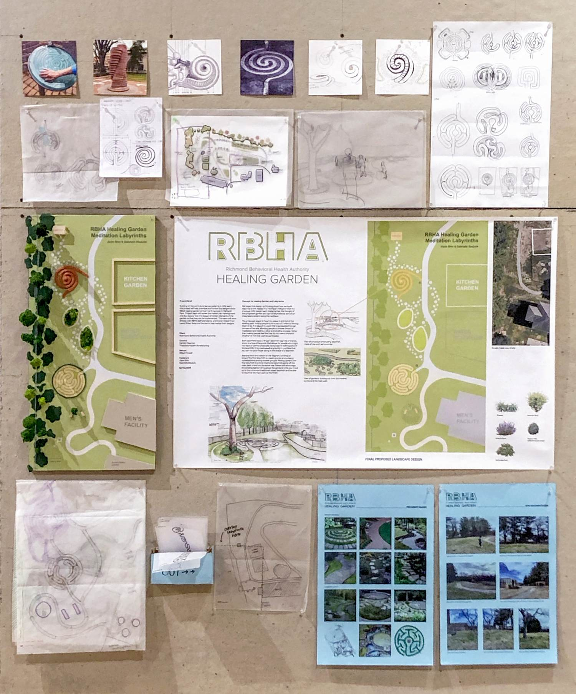

The shape of the labyrinth was inspired by the natural labyrinth within the human ear. It also refers to the breath mark in music which gives the instrumentalist or the singer a breathing room in between measures.
Residents and visitors may navigate through the labyrinths in a winding fashion, with finger labyrinths available at each station for those with restricted mobility.


Our team came up with a site plan and a 1:120 scale model of the labyrinths to showcase at the end of spring.


